Analyser la qualité avec fastQC
Contents
Analyser la qualité avec fastQC#
Fast Quality Control (FastQC)
Propose un certain nombre de diagrammes pour évaluer la qualité du séquençage.
fastqc [-o output dir] [--(no)extract] [-f fastq|bam|sam] fq1 fq2 ...
# On remonte d’un niveau dans l’arborescence
cd /shared/projects/form_2022_32/coursLinux/chip-seq/
# On créé un répertoire
mkdir qc
mkdir: cannot create directory ‘qc’: File exists
# 2 instructions sur la même ligne séparées par ‘;’
ls -l ; cd qc
total 16
drwxrwx---+ 2 tdenecker tdenecker 4096 Nov 10 17:27 bam
drwxrwx---+ 3 tdenecker tdenecker 4096 Nov 10 17:53 fastq
drwxrwx---+ 2 tdenecker tdenecker 4096 Nov 10 17:52 qc
-rw-rw----+ 1 tdenecker tdenecker 86 Nov 10 17:53 siNT_ER_E2_r3_chr21_fastqc.log
# Charge l'outil fastqc dans l’environnement
module load fastqc/0.11.8
# Obtenir de l’aide
fastqc -h
# Lancer fastqc
fastqc -f fastq -o ./ ../fastq/siNT_ER_E2_r3_chr21.fastq 2> siNT_ER_E2_r3_chr21_fastqc.log
Analysis complete for siNT_ER_E2_r3_chr21.fastq
less siNT_ER_E2_r3_chr21_fastqc.log
# Que voyez vous ?
ls
Jupyter Lab : accès au fichier html#
Côté gauche, avec l’onglet “répertoire” se placer à la racine du cluster
Sélectionner les répertoires jusqu’au répertoire de travail /shared/projects/<project>/chip-seq/qc (adapter <projet>)
Cliquer sur le fichier html pour l’ouvrir dans un nouvel onglet
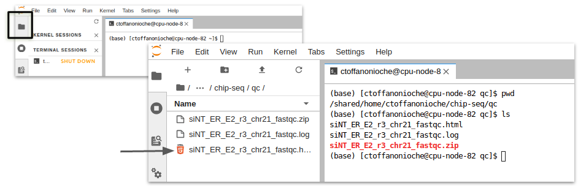
Télécharger les résultats avec Cyberduck (OSX)#
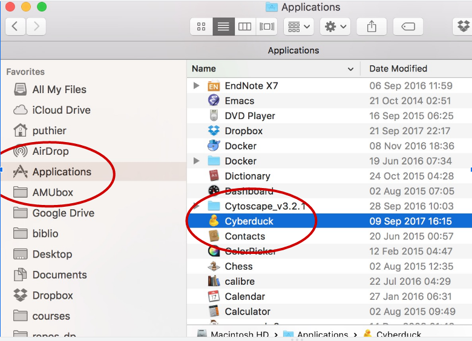
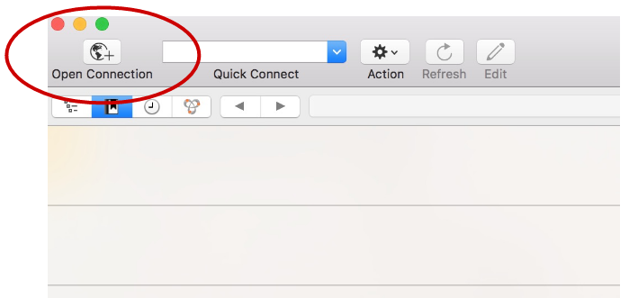
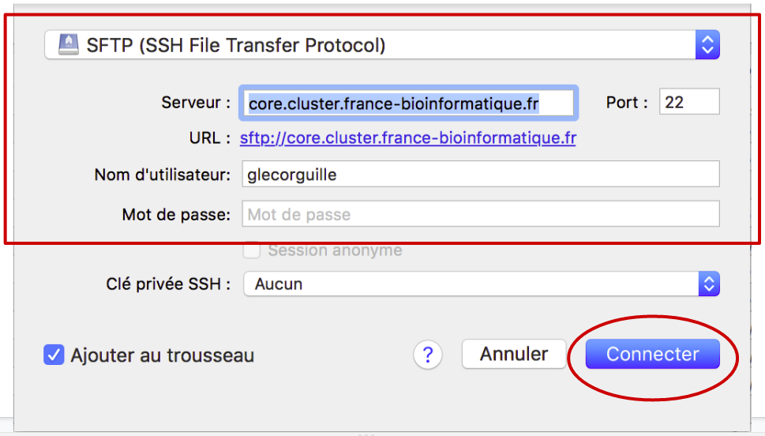
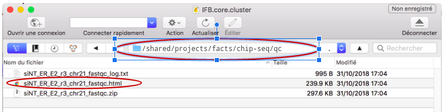
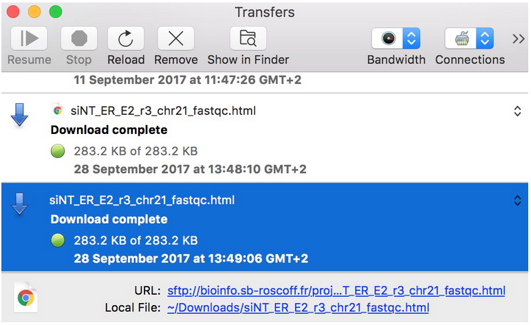
Résultats de FastQC#
Exploration des résultats de fastqc en interactif.
A quoi correspond le diagramme “Per base sequence quality”.
A quoi correspond le diagramme “Per sequence quality score” ?
A quoi correspond le diagramme “Per base sequence content” ?
A quoi correspond le diagramme “Per sequence GC content” ?
A quoi correspond le diagramme “Per sequence N content” ?
A quoi correspond le diagramme “Sequence length distribution” ?
A quoi correspond le diagramme “Sequence duplication level” ?
A quoi correspond le diagramme “Kmer content” ?
See also
Les explications ci-dessous sont la compilation des 3 ressources suivantes :
Basic Statistics#
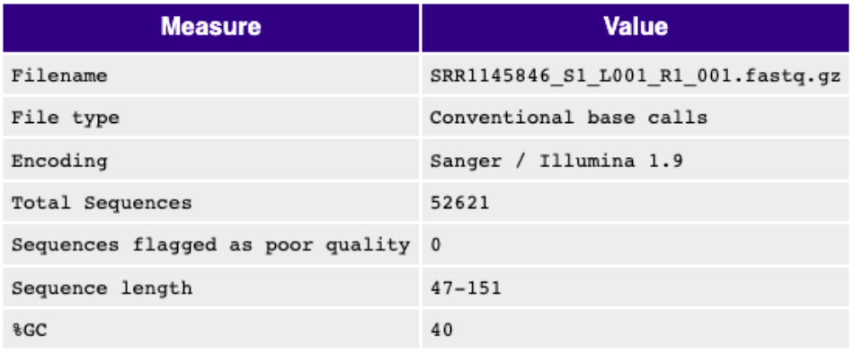
The Basic Statistics module generates some simple composition statistics for the file analysed.
Filename
File type
Encoding: Says which ASCII encoding of quality values was found in this file.
Total Sequences: A count of the total number of sequences processed.
Filtered Sequences:
Sequence Length
Warning
Basic Statistics never raises a warning.
Error
Basic Statistics never raises an error.
Per Base Sequence Quality#
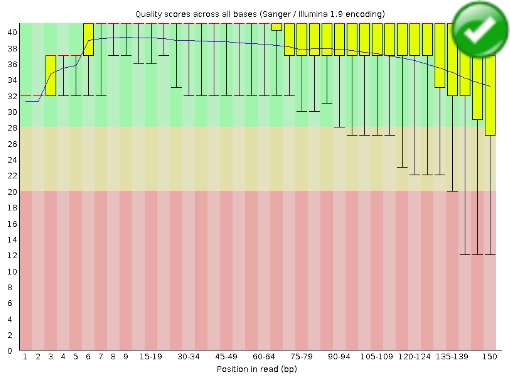
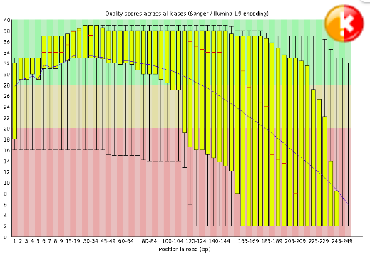
This view shows an overview of the range of quality values across all bases at each position in the FastQ file. For each position a BoxWhisker type plot is drawn. The elements of the plot are as follows: The central red line is the median value The yellow box represents the inter-quartile range (25-75%) The upper and lower whiskers represent the 10% and 90% points The blue line represents the mean quality The y-axis on the graph shows the quality scores. The higher the score the better the base call. The background of the graph divides the y axis into very good quality calls (green), calls of reasonable quality (orange), and calls of poor quality (red). The quality of calls on most platforms will degrade as the run progresses, so it is common to see base calls falling into the orange area towards the end of a read.
Warning
A warning will be issued if the lower quartile for any base is less than 10, or if the median for any base is less than 25.
Error
This module will raise a failure if the lower quartile for any base is less than 5 or if the median for any base is less than 20.
Per Tile Sequence Quality#
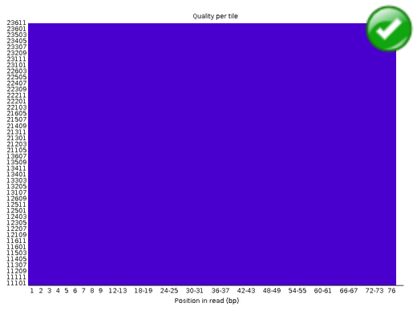
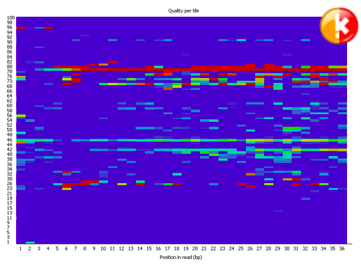
The plot shows the deviation from the average quality for each tile. The colours are on a cold to hot scale, with cold colours being positions where the quality was at or above the average for that base in the run, and hotter colours indicate that a tile had worse qualities than other tiles for that base. In the example below you can see that certain tiles show consistently poor quality. A good plot should be blue all over.
Warning
This module will issue a warning if any tile shows a mean Phred score more than 2 less than the mean for that base across all tiles.
Error
This module will issue a warning if any tile shows a mean Phred score more than 5 less than the mean for that base across all tiles.
Per Sequence Quality Scores#
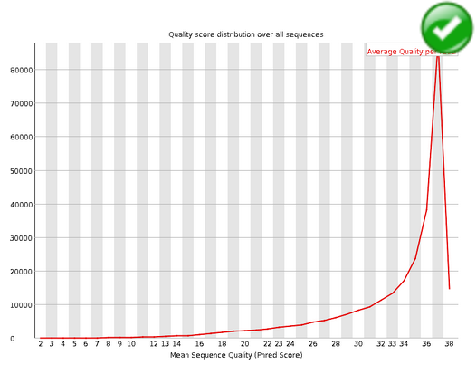
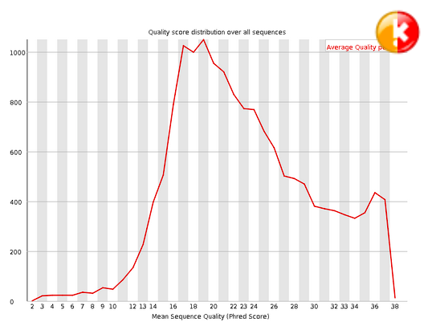
The per sequence quality score report allows you to see if a subset of your sequences have universally low quality values. It is often the case that a subset of sequences will have universally poor quality, often because they are poorly imaged (on the edge of the field of view etc), however these should represent only a small percentage of the total sequences.
If a significant proportion of the sequences in a run have overall low quality then this could indicate some kind of systematic problem - possibly with just part of the run (for example one end of a flowcell).
Warning
A warning is raised if the most frequently observed mean quality is below 27 - this equates to a 0.2% error rate.
Error
An error is raised if the most frequently observed mean quality is below 20 - this equates to a 1% error rate.
Per Base Sequence Content#
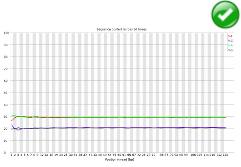
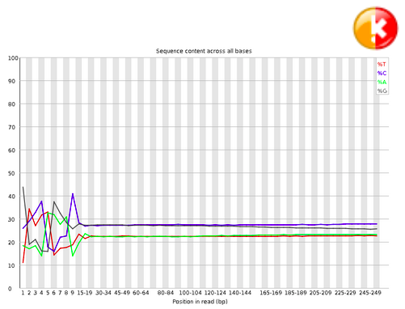
Per Base Sequence Content plots out the proportion of each base position in a file for which each of the four normal DNA bases has been called.
In a random library you would expect that there would be little to no difference between the different bases of a sequence run, so the lines in this plot should run parallel with each other.
If you see strong biases which change in different bases then this usually indicates an overrepresented sequence which is contaminating your library. A bias which is consistent across all bases either indicates that the original library was sequence biased, or that there was a systematic problem during the sequencing of the library.
Warning
This module issues a warning if the difference between A and T, or G and C is greater than 10% in any position.
Error
This module will fail if the difference between A and T, or G and C is greater than 20% in any position.
Per Sequence GC Content#
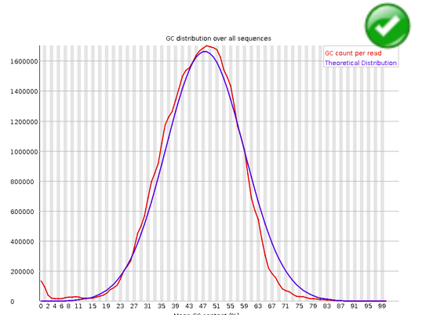

This module measures the GC content across the whole length of each sequence in a file and compares it to a modelled normal distribution of GC content. In a normal random library you would expect to see a roughly normal distribution of GC content where the central peak corresponds to the overall GC content of the underlying genome. Since we don’t know the the GC content of the genome the modal GC content is calculated from the observed data and used to build a reference distribution. An unusually shaped distribution could indicate a contaminated library or some other kinds of biased subset. A normal distribution which is shifted indicates some systematic bias which is independent of base position. If there is a systematic bias which creates a shifted normal distribution then this won’t be flagged as an error by the module since it doesn’t know what your genome’s GC content should be.
Warning
A warning is raised if the sum of the deviations from the normal distribution represents more than 15% of the reads.
Error
This module will indicate a failure if the sum of the deviations from the normal distribution represents more than 30% of the reads.
Per Base N Content#
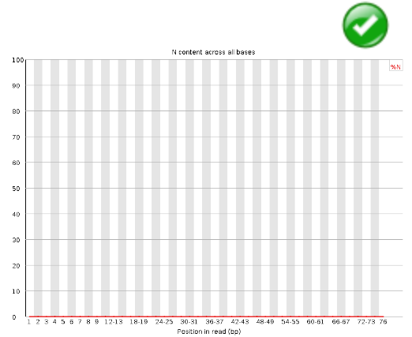
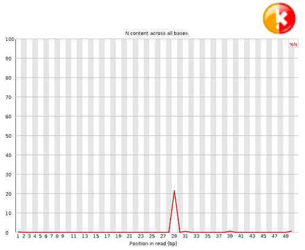
If a sequencer is unable to make a base call with sufficient confidence then it will normally substitute an N rather than a conventional base call This module plots out the percentage of base calls at each position for which an N was called.
It’s not unusual to see a very low proportion of Ns appearing in a sequence, especially nearer the end of a sequence. However, if this proportion rises above a few percent it suggests that the analysis pipeline was unable to interpret the data well enough to make valid base calls.
Warning
This module raises a warning if any position shows an N content of >5%.
Error
This module will raise an error if any position shows an N content of >20%.
Sequence Length Distribution#
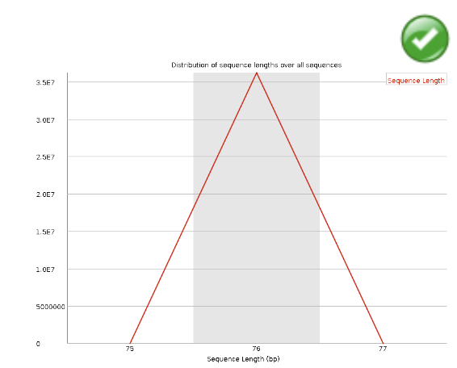
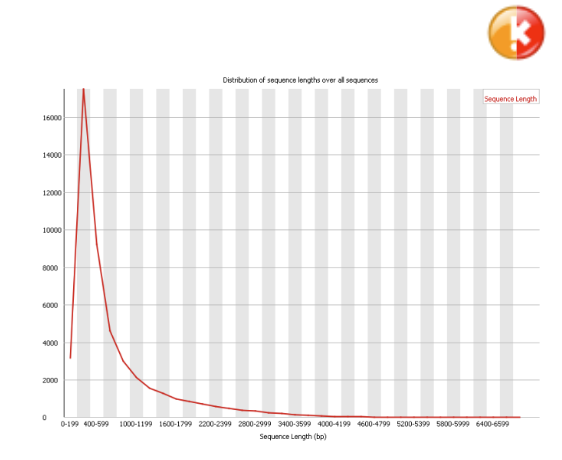
Some high throughput sequencers generate sequence fragments of uniform length, but others can contain reads of wildly varying lengths. Even within uniform length libraries some pipelines will trim sequences to remove poor quality base calls from the end. This module generates a graph showing the distribution of fragment sizes in the file which was analysed. In many cases this will produce a simple graph showing a peak only at one size, but for variable length FastQ files this will show the relative amounts of each different size of sequence fragment.
Warning
This module will raise a warning if all sequences are not the same length.
Error
This module will raise an error if any of the sequences have zero length.
Duplicate Sequences#
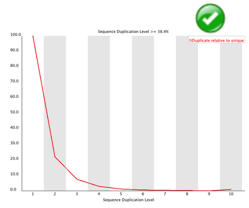
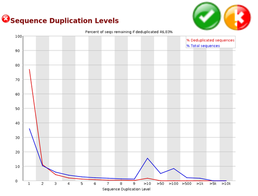
In a diverse library most sequences will occur only once in the final set. A low level of duplication may indicate a very high level of coverage of the target sequence, but a high level of duplication is more likely to indicate some kind of enrichment bias (eg PCR over amplification).
This module counts the degree of duplication for every sequence in the set and creates a plot showing the relative number of sequences with different degrees of duplication.
Warning
This module will issue a warning if non-unique sequences make up more than 20% of the total.
Error
This module will issue a error if non-unique sequences make up more than 50% of the total.
Overrepresented Sequences#
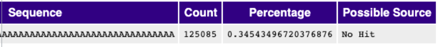
A normal high-throughput library will contain a diverse set of sequences, with no individual sequence making up a tiny fraction of the whole. Finding that a single sequence is very overrepresented in the set either means that it is highly biologically significant, or indicates that the library is contaminated, or not as diverse as you expected. This module lists all of the sequence which make up more than 0.1% of the total. To conserve memory only sequences which appear in the first 200,000 sequences are tracked to the end of the file. It is therefore possible that a sequence which is overrepresented but doesn’t appear at the start of the file for some reason could be missed by this module.
Warning
This module will issue a warning if any sequence is found to represent more than 0.1% of the total.
Error
This module will issue an error if any sequence is found to represent more than 1% of the total.
Adapter Content#
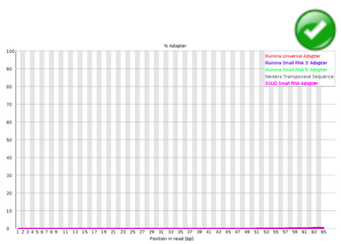
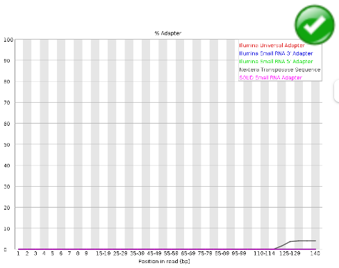
The Kmer Content module will do a generic analysis of all of the Kmers in your library to find those which do not have even coverage through the length of your reads. This can find a number of different sources of bias in the library which can include the presence of read-through adapter sequences building up on the end of your sequences. You can however find that the presence of any overrepresented sequences in your library (such as adapter dimers) will cause the Kmer plot to be dominated by the Kmers these sequences contain, and that it’s not always easy to see if there are other biases present in which you might be interested.
Warning
This module will issue a warning if any sequence is present in more than 5% of all reads.
Error
This module will issue a warning if any sequence is present in more than 10% of all reads.
Rogner les reads#
Une étape de pré-processing
Les reads en entrée sont rognés afin d’éliminer des extrémités de mauvaises qualités.
En fonction de la capacité de l’outil à faire des alignements locaux ou globaux et de la qualité intrinsèque des données, cette étape peut être cruciale.
Risque: peu de reads alignés
Quelques logiciels existants
Sickle-trim (sliding window-based trimming)
FASTX-Toolkit (cut a defined number of nucleotides)
Trimmomatic
Cutadapt
Sickle#
Principe#
Objectif:
Supprimer les extrémités de mauvaise qualité.
Solution:
Parcourir le read avec un fenêtre coulissante de droite à gauche. Calculer la qualité moyenne dans chaque fenêtre
Si la valeur de qualité chute en dessous d’une valeur seuil q, déléter l’extrémité 3’.
Si la taille restante du read est inférieure à une longueur seuil l, déléter le read.
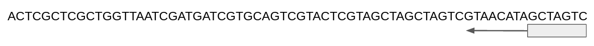
L’interface de sickle#
Sickle contient 2 sous-commandes: pe (paired-end sequence trimming) et se (single-end sequence trimming)
module load sickle-trim/1.33
sickle -h
sickle se --help # Obtenir de l’aide sur la sous-commande se.
Exercice (noté)#
1- Créez un répertoire trimmed au même niveau dans l’arborescence que fastq
2- Placez vous dans ce répertoire
3- Ivoquez l’aide de sickle (se)
4- Construisez une commande qui combine les options suivantes :
Fournissez à sickle le fichier d’entrée siNT_ER_E2_r3_chr21.fastq.
Qualité de type “Sanger”, seuils de qualité et de longueur tous deux à 20.
Demandez à sickle se de produire un fichier de sortie que vous nommerez siNT_ER_E2_r3_chr21_trim.fastq et qui devra être créé dans le dossier trimmed.
Rediriger la sortie standard dans un fichier que vous nommerez siNT_ER_E2_r3_chr21_sicke_log.txt placé dans le dossier trimmed.
5- Comptez le nombre de lignes présentes dans les fichiers fastq avant et après utilisation de sickle (commande wc -l)
6- Lisez le contenu du fichier log. Obtenez-vous le même résultat ?
Solution
cd .. # On remonte d’un niveau dans l’arborescence
mkdir trimmed # On créé un répertoire
cd trimmed # On se déplace dans ce répertoire
# On lance sickle
# Ici le \ indique un retour à la ligne mais vous n’êtes pas censé le
# taper et aller à la ligne
# &> redirige la sortie d’erreur et la sortie standard dans un fichier
sickle se -f ../fastq/siNT_ER_E2_r3_chr21.fastq \
-t sanger -o siNT_ER_E2_r3_chr21_trim.fastq \
&> siNT_ER_E2_r3_chr21_sickle.log
# le nombre de lignes présentes dans les fichiers fastq
wc -l ../fastq/siNT_ER_E2_r3_chr21.fastq # Données brutes
wc -l siNT_ER_E2_r3_chr21_trim.fastq # Données nettoyées